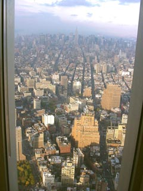
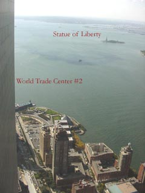
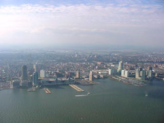

|
home
> High Level Programming |
|
|
High Level
Programming
or what you
can see out of the windows of your office.
click
for 97KB image:
 |
This picture is taken by Olympus
D-460Zoom digital camera from the MD-11
aircraft window on my flight from Europe. You can use this photo (click
to get large version) as your desktop background (depending on your desktop
settings you may need to convert it to BMP format). |
In 1999-2000
I was working on 103rd floor of the World Trade Center in Downtown New
York City (WTC building #1 - the one with antenna) as an employee of a
Cantor Fitzgerald / ESpeed. In a tragic events of September 11th, 2001
both buildings were completely destroyed and thousands of people were killed
(including hundreds of people at Cantor Fitzgerald):
Click on the
image below to see full-sized view of the downtown today (memorial lights):
Below are
views from the windows of 103th floor made in 2000 - I made these pictures
almost 2 years before tragic events:
Manhattan
(looking North) - click for 256KB image:

|
Brooklyn
bridge - click for 422 KB image:
|
Statue
of Liberty - click for 188KB image:

|
New Jersey
- click for 187KB image:

|
|

{kind=link}
{kind=link}
{kind=link}
{kind=link}
{kind=link}